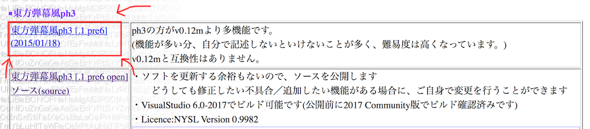

Site Navigation- Return to Home
- ph3 Tutorial Index
- Danmakufu Wiki
- Ph3 Function List (DNH Wiki)
- ph3 Style Guidelines
Function Reference- Function List
- General Functions
- Object Functions
- Player Script Fxns
- Private Script Fxns
Lesson Resources
Tutoriales de Danmakufu ph3 de Sparen Lección 1 – Introducción, bajando Danmakufu
Primero lo primero – al comienzo de cada lección incluiré un video de algún trabajo de Danmakufu de diferentes personas. A veces puede estar relacionado al contenido de la lección, pero a veces no. Estos videos son para mostrar las posibilidades que Danmakufu tiene para ofrecer. También pondré checkpoints y otras cosas que puedan ser útiles, como videos describiendo ciertos fenómenos o recursos para Danmakufu y programación en computadoras en general.
Tabla de contenidos
Parte 1: ¿Qué es Danmakufu?
Touhou Danmakufu es un programa para Windows (se puede usar en MacOSX y en distros de Linux utilizando Wine, pero puede que no funcione de la forma esperada) que permite que los llamados "scripters de Danmakufu" creen patrones danmaku similares a los que se pueden encontrar en los juegos de Touhou Project y otros shooters. Incluye una multitud de funciones listas para utilizar y, si bien es bastante limitado para lo que se puede usar (teniendo en cuenta que fue diseñado para hacer shooters parecidos a Touhou), es posible hacer que el Danmakufu haga lo que quieras con límites sorprendentemente flexibles. Juegos al estilo Highly Responsive to Prayers (el primer Touhou) y cosas como novelas visuales son posibles de hacer con Danmakufu.
Para todos los tutoriales, ten en cuenta esto:
let str = "Esto es un código en Danmakufu.";Los scripts se hacen escribiendo código en archivos de texto. Tal vez prefieras usar .dnh como extensión para tus archivos para poder resaltar el texto y otras cosas que serán explicadas más adelante en esta lección.
Parte 2: ¿De qué es este tutorial?
Este tutorial intentará cubrir todo, desde los conceptos más básicos hasta los moderadamente avanzados en Danmakufu y en ciencias de la computación, también pondré recursos sobre edición de gráficos y Audacity. Recomiendo mucho hacer estos tutoriales en orden – En cada unidad, haz las lecciones de a una, y asegúrate de entender los temas tratados en la lección anterior antes de seguir con la siguiente. Al fin y al cabo, el que va a aprender este lenguaje eres tú, y este tutorial solo es uno de los tantos recursos existentes para asistirte en el aprendizaje de lo básico del Danmakufu ph3.
¡Pero espera! ¿No hice tutoriales de Danmakufu antes? ¿Como estos?
La respuesta es que sí. Sin embargo, esos tutoriales son de relativa pobre calidad y están hechos para Danmakufu 0.12m.
Para estos tutoriales, asumo que ya sabes lo que es Touhou, las bombas, continues, replays, etc. Si no lo sabes, puedes visitar esta página de tutoriales del antes mencionado 0.12m. Por favor ten en cuenta que hay diferencias significativas entre el 0.12m y el ph3, y que el ph3 no te consiente haciendo todas las tareas secundarias por ti, tienes que hacerlo tú mismo en el ph3, pero al mismo tiempo es menos limitante y, como dije antes, puedes hacer casi cualquier cosa (razonable) usando el ph3.
Notar que en el menú de la izquierda hay dos links importantes. Uno es un link a la Wiki de Danmakufu – agrega esto a marcadores, es excepcionalmente útil. El otro es un link directo a la documentación en inglés que, aunque incompleta en algunas partes, debería ser increíblemente útil. Unfortunadamente, no hay documentación en español en la Wiki.
Parte 3: ¿Qué otros recursos puedo usar?
Este es uno de los tantos recursos que puedes usar para aprender Danmakufu. Rika and Nitori's Garage Experiments del foro de Maidens of Kaleidoscope tiene threads llenos de información útil (aunque a veces desactualizados). Ten en cuenta que el 0.12m y el ph3 son bastante diferentes, así que ten cuidado cuando usas código del 0.12m, ya que no anda directamente en ph3. Visita este thread para leer la guía de creación para fans de ZUN y la guía de cómo usar AppLocale (para aquellos que quieran usar el 0.12m y versiones del ph3 anteriores al ph3[.1 pre2]).
También ten en cuenta el paquete para resaltar la sintaxis del Danmakufu para Sublime Text. Drake y yo estuvimos trabajando por un tiempo y esta es una de las razones para usar el formato .dnh – Sublime Text reconocerá esta extensión si has instalado el paquete y automáticamente sugerirá funciones, proveerá algo de documentación y más. La versión de prueba de Sublime Text 2 dura para siempre (hasta donde sé), así que usa esta por favor. Las direcciones están indicadas en este thread.
Por supuesto, la Wiki de Danmakufu no solo tiene funciones y cosas como esas – también contiene links a otros tutoriales y guías, a las cuales me voy a referir y enlazar bastante seguido en estos tutoriales, ya que mi estilo puede no ser el más útil para aprendices novatos. Deberías poder encontrarlo por tu cuenta – si no puedes ahora, en algún momento podrás (la misma lógica se aplica a los errores – debes ser capaz de encontrarlos por tu cuenta, usualmente harás un facepalm o alguna otra cosa cuando te des cuenta lo tonto que era el error).
Una nota final para hablar sobre Bulletforge. Es un sitio al que puedes subir tus propios scripts para que los vea el mundo entero. Pero ten en cuenta algunas cosas:
- El plagio no es tolerado. No uses código sin permiso ni cita a menos que el creador de dicho código haya dado permiso explícitamente.
- Antes de subir a Bulletforge, haz que alguien más pruebe tu script y asegúrate de que funcione, especialmente si estás subiendo algo para una competencia.
- Descarga algunos scripts geniales – el código puede que sea un desastre, pero si puedes entender cómo funciona el código de alguien más, eso te dará un mejor entendimiento de cómo hacer tus propios patrones. Sin embargo no uses su código, además de que es plagio, a menudo causa problemas porque el código no funciona como quisieras. Una regla general es no usar código que no entiendas.
- ¡Juega esos scripts geniales que has bajado y dales feedback!
Para más información sobre Bulletforge, chequea esta página.
Parte 4: ¿Cómo descargo Danmakufu?
El link oficial para descargar el Touhou Danmakufu ph3 está aquí. Para futuras referencias, también puedes hacer clic en "Download ph3" en la página principal de la Wiki de Danmakufu, que te llevará a este sitio.
Por supuesto, todo está en japonés, pero no dejes que eso te confunda. Simplemente haz clic en la versión más reciente, que debería estar en la parte superior izquierda. La columna de la derecha es el changelog.
Ten en cuenta que la versión pre4a NO es la última.
Una vez que hagas esto, el Danmakufu empezará a bajar.
A tener en cuenta: Una vez descargado, deberías etiquetar la versión de Danmakufu que tienes – si hay una actualización, quizás tengas que bajar una nueva versión, y poner qué versión tienes en el nombre de la carpeta ayuda a saber si ya tienes la última.
Parte 5: ¿Cómo instalo scripts?
Para instalar scripts, primero tienes que hacer lo siguiente:
- Verifica si el script ya viene preempaquetado con Danmakufu. Si es así, simplemente abre el ejecutable con que lo viene
- De lo contrario, verifica si el script está hecho para 0.12m o ph3. Los scripts no van a funcionar en la otra versión.
- Si es para ph3, fíjate para qué versión está optimizado. Esto debería estar en la descripción de Bulletforge, algo obvio, o sino en el archivo Léeme (ReadMe). No todos los scripters ponen para qué versión están programando – en este caso, simplemente ejecútalo en la última.
- Si está hecho para una nueva versión, entonces actualiza. Si es para una versión más vieja, deberías poder jugarlo con la última versión disponible de ph3, con algunas pocas excepciones ("Experiment 354" es el mejor ejemplo de estas excepciones – no funcionará en el ph3[.1] así que tienes que bajar el ph3[.0], mejor conocido como ph3[.0 pre23]. Esto permitirá jugar el script).
Para scripts que no vengan empaquetados con Danmakufu, coloca los que no sean de jugadores directamente en la carpeta "script" del directorio principal de tu Danmakufu. En el 0.12m, coloca los scripts de jugadores (player scripts) en la carpeta "player" – en ph3, la carpeta de jugadores está ubicada dentro de tu carpeta "script".
Parte 6: ¿Cómo actualizo Danmakufu?
Para actualizar Danmakufu ph3, descarga la versión más reciente y haz lo siguiente:
- Abre la carpeta "script" de ambas versiones, la nueva y la vieja.
- Mueve todos los archivos no default (las carpetas default son "sample", "default_system" y "ExRumia". La carpeta "player" también contiene archivos default) a la carpeta "script" de la nueva versión
- Ahora entra a la carpeta "player" de ambas versiones. Haz lo mismo que hiciste con la carpeta "script". La carpeta "default_player" es la default aquí.
Recomiendo no copiar las carpetas default de la vieja versión a la nueva porque puede haber cosas nuevas que es mejor no sobrescribir, como cuando aparecieron los shaders y de repente la nueva carpeta de ejemplo tenía varios archivos nuevos.